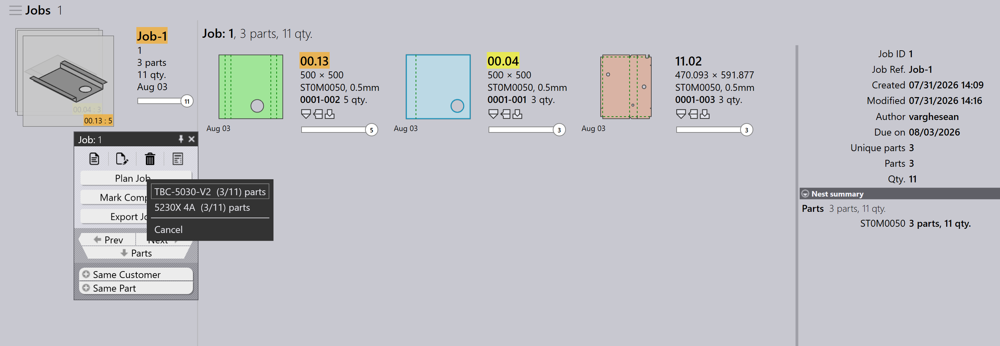
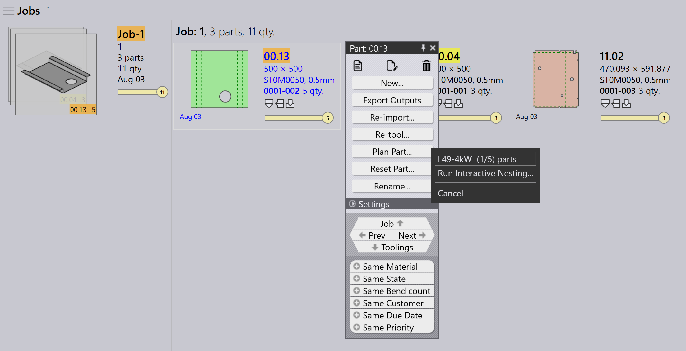

Αυτόματος σχεδιασμός
Ο Αυτόματος σχεδιασμός αυτοματοποιεί τη διαδικασία σχεδιασμού για τις εργασίες κάμψης και κοπής. Βοηθά στη βελτιστοποίηση της χρήσης των μηχανών, τη μείωση της σπατάλης υλικού και τη αποτελεσματική διαχείριση των προτεραιοτήτων των εργασιών.
Η γενική ροή εργασίας είναι να σχεδιαστούν πρώτα τα εξαρτήματα για τις μηχανές κάμψης και έπειτα να σχεδιαστούν τα εξαρτήματα για τις μηχανές κοπής.
Σχεδιασμός κάμψης
Ο Σχεδιασμός κάμψης ορίζει τον τρόπο με τον οποίο τα εξαρτήματα κατανέμονται στις διαθέσιμες μηχανές κάμψης.
Παράδειγμα: Σχεδιασμός κάμψης για 5 εξαρτήματα (10 μονάδες το καθένα).
-
Κάντε κλικ στην επιλογή Plan Job….
-
5 εξαρτήματα (50 μονάδες) αντιστοιχίζονται στην TBC-5030 B27
-
Μετά τον σχεδιασμό, η κατάσταση της εργασίας ενημερώνεται σε Bend Planned για σύνολο 50 μονάδων. Τα βήματα εργασίας ενημερώνονται με τις αντιστοιχισμένες μηχανές κάμψης και τις ποσότητες εξαρτημάτων.


Σχεδιασμός κοπής - κατανομή
Μετά τον σχεδιασμό κάμψης, ο σχεδιασμός κοπής δημιουργείται με την κατανομή εξαρτημάτων σε κατάλληλες μηχανές κοπής. Υπάρχουν δύο τρόποι κατανομής:
Σχεδιασμός εργασίας για κατανομή - εργασία
Χρησιμοποιήστε το Plan Job… για να κατανείμετε όλα τα εξαρτήματα της εργασίας μαζί. Η μηχανή κατανομής επεξεργάζεται αυτόματα όλα τα εξαρτήματα βάσει της προτεραιότητας εργασίας, της ημερομηνίας παράδοσης και του υλικού. Αυτό είναι ιδανικό όταν θέλετε να κατανεμηθεί ολόκληρη η εργασία και να αποσταλεί στην ουρά κοπής με μία κίνηση.
-
Κάντε κλικ στο Plan Job… και επιλέξτε οποιαδήποτε μηχανή.
-
Η μηχανή Pmonitor ξεκινά την εργασία κατανομής.
-
Η μηχανή διαχωρίζει την εργασία όπως απαιτείται για να μεγιστοποιήσει τη χρήση των μεταλλικών πλακών.
| Δεν είναι δυνατή η κατανομή με αντιστοίχιση συγκεκριμένων υλικών σε συγκεκριμένες μηχανές. Για παράδειγμα, δεν μπορείτε να κατανείμετε το Material1 στη Machine1 και το Material2 στη Machine2 στην ίδια λειτουργία. |
Σχεδιασμός εξαρτήματος για κατανομή - παραγγελία
Χρησιμοποιήστε το Plan Part για κατανομή σε επίπεδο παραγγελίας — δηλαδή κατανομή μόνο επιλεγμένων εξαρτημάτων από την εργασία. Συνήθως, κάνετε δεξί κλικ σε ένα εξάρτημα και επιλέγετε Same Material, ώστε μόνο τα εξαρτήματα με το ίδιο υλικό να ομαδοποιούνται και να κατανέμονται μαζί.
Αυτό είναι χρήσιμο όταν θέλετε να ελέγχετε ποια εξαρτήματα κατανέμονται — για παράδειγμα, εξαρτήματα του ίδιου υλικού ή μια συγκεκριμένη παρτίδα.

-
Στη σελίδα Λεπτομερειών εργασίας, κάντε δεξί κλικ σε οποιοδήποτε εξάρτημα και επιλέξτε Same Material. Όλα τα εξαρτήματα με το ίδιο υλικό επιλέγονται.
-
Κάντε κλικ στο Plan Part… και επιλέξτε μια μηχανή για κατανομή.
-
Η μηχανή επεξεργάζεται μόνο τα επιλεγμένα εξαρτήματα και δημιουργεί τις κατανομές.